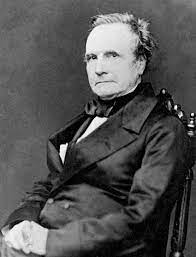

Charles Babbage
The beginning of the concept of'programmable computer'
Called the father of computers
Developed the first mechanical computer
Career
- At the age of eight, he contracted a severe fever and moved to the countryside for treatment.
- Due to health problems, most of them study with a tutor
- Peterhouse's greatest mathematician
Achievements
- Wanting to find a mechanical calculation method that can reduce frequent human calculation errors
- By developing a difference engine, it is possible to automatically calculate the number of excitation groups.